Február 2025 → Február 2026. Za ten rok sa zmenilo všetko.
Kam to smeruje
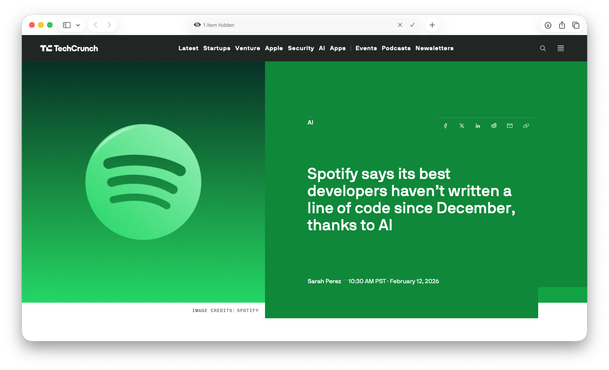
Spotify: vývojári od decembra 2025 nepíšu väčšinu kódu sami
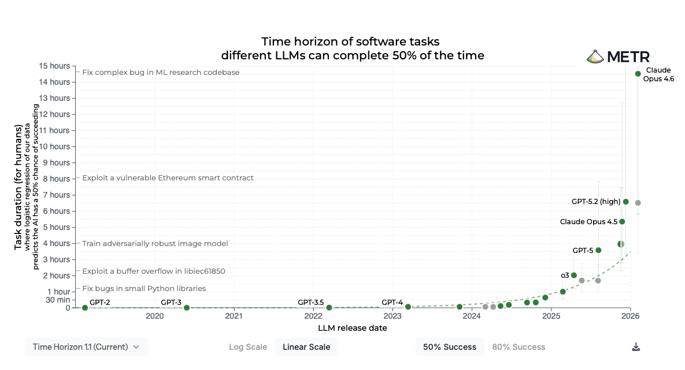
METR: AI rieši čoraz komplexnejšie úlohy, exponenciálny rast
Čo je Claude Code
Nie je to chatbot v prehliadači.
Je to AI agent vo vašom počítači. Číta vaše súbory, píše kód, spúšťa príkazy.
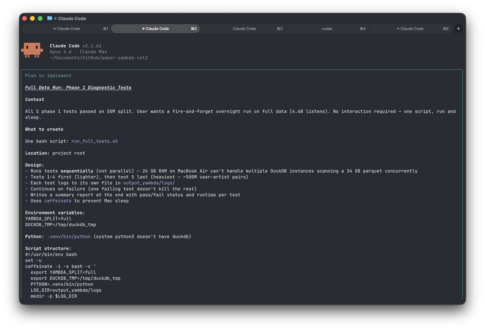
Pravidlá workshopu
Pýtajte sa kedykoľvek - hlúpe otázky neexistujú
Vlastné tempo je OK - nie je to preteky
Prestávky medzi každým blokom
Chyby sú súčasť učenia - aj AI sa mýli
01
Terminál a inštalácia
60 minút
Čo je terminál
Terminál = textové rozhranie pre váš počítač.
Píšete príkazy, dostávate odpovede. Chatovanie s počítačom.
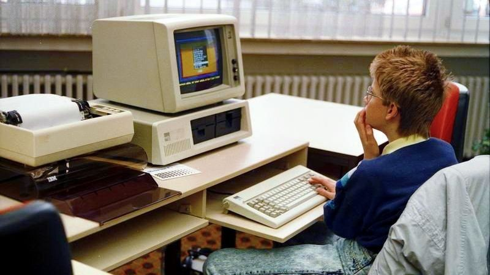
Prečo terminál
Automatizácia - opakujúce sa úlohy jedným príkazom
Presnosť - príkazy sú jednoznačné
Sila - veci čo v GUI nejdú
AI agenti bežia v termináli - to je to hlavné
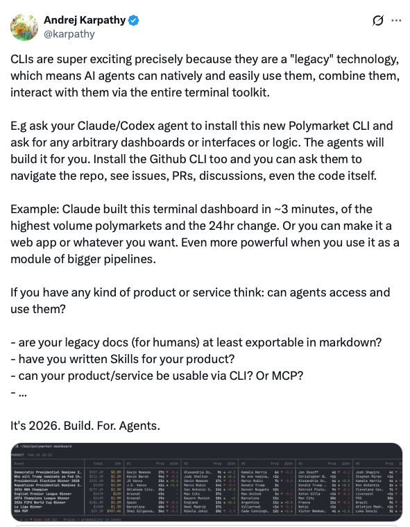
Ghostty - moderný terminál
Rýchly, pekný, jednoduché nastavenia
Natívny na macOS aj Linux
GPU-akcelerovaný rendering
Témy, fonty, splitovanie okien
ghostty.org
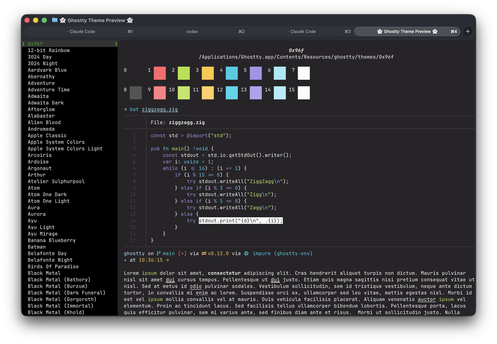
Základné príkazy
pwd
kde som? (print working directory)
ls
čo tu je? (list)
cd workshop
presun sa (change directory)
mkdir projekty
vytvor priečinok (make directory)
Cvičenie: Navigácia v termináli
Otvorte Ghostty
Napíšte pwd - kde ste?
Napíšte ls - čo vidíte?
Vytvorte priečinok: mkdir workshop
Presuňte sa doň: cd workshop
Node.js
Runtime pre JavaScript - potrebujeme ho na inštaláciu Claude Code.
node --version
overenie či už máte Node.js
Ak nie → stiahnite z nodejs.org
Download → LTS verzia → nainštalovať → reštartovať terminál
Inštalácia Claude Code
npm install -g @anthropic-ai/claude-code
nainštaluje Claude Code globálne
claude
prvé spustenie → automaticky otvorí prehliadač
Prihláste sa v prehliadači cez Claude Pro alebo Team účet
Po prihlásení sa terminál sám prepne do Claude Code
Cvičenie: Inštalácia
Nainštalujte Node.js (ak ešte nemáte)
Spustite npm install -g @anthropic-ai/claude-code
Spustite claude
Prihláste sa cez prehliadač
Overte: "Povedz mi vtip"
Prvá úloha pre Claude Code
> Vytvor mi zoznam 10 postov na LinkedIn o AI v marketingu
Claude Code analyzuje požiadavku, generuje obsah, ukladá výsledok.
AI agent v akcii — bez copy-paste, bez prepínania okien.
CC vs Chatbot
Chatbot
V prehliadači
Jedno okno
Copy-paste
Bez prístupu k súborom
Claude Code
V termináli
Celý počítač
Priama práca so súbormi
Skripty a automatizácia
Zhrnutie: Blok 1
Terminál nie je strašný - je to len textové rozhranie
Základné príkazy: pwd, ls, cd, mkdir
Claude Code beží na vašom počítači
CC vie odpovedať na otázky aj generovať obsah
Prestávka
10 min
02
Súbory, kontext a príkazy
60 minút
CC číta vaše súbory
Claude Code vie čítať, vytvárať a editovať súbory
Nemusíte copy-paste do chatbota
Pracuje priamo s vašimi dátami
Toto je game changer
Analýza PDF
> Analyzuj tento PDF report a vytvor
zhrnutie kľúčových bodov
Claude Code číta report.pdf...
Našiel som 24-stránkový report o Q4 výsledkoch.
Tu je zhrnutie:
1. Celkový revenue vzrástol o 15%...
2. Najúspešnejšia kampaň bola...
3. Odporúčania na Q1...
Analýza obrázkov
> [drag & drop screenshot do terminálu]
Čo vidíš na tomto screenshote? Aké sú hlavné
problémy s UX?
Claude Code analyzuje obrázok...
Vidím landing page s niekoľkými UX problémami:
1. CTA tlačidlo je príliš malé a málo kontrastné
2. Navigácia má 8 položiek — odporúčam max 5
3. Hero sekcia nemá jasný value proposition
Práca s CSV alebo XLSX
> Spracuj tento CSV a vytvor prehľad
top 10 kampaní podľa ROI
Claude Code analyzuje kampane.csv...
Súbor obsahuje 847 riadkov, 12 stĺpcov.
Top 10 kampaní podľa ROI:
┌────────────────────┬───────┬──────────┐
│ Kampaň │ ROI │ Spend │
├────────────────────┼───────┼──────────┤
│ Summer_Sale_IG │ 4.2x │ €2,340 │
│ Retarget_Email_Q3 │ 3.8x │ €890 │
│ ... │ ... │ ... │
└────────────────────┴───────┴──────────┘
Cvičenie: Analýza dát
Stiahnite vzorový CSV/XLSX súbor
Požiadajte CC o analýzu: "Analyzuj tento CSV"
Nechajte CC vytvoriť výstup alebo graf
CLAUDE.md
Pamäť projektu - inštrukcie pre Claude Code.
Ako projektový brief pre AI agenta. CC si ho prečíta pri každom spustení.
Definovať tón komunikácie a cieľovú skupinu
Uviesť štruktúru projektu a dôležité súbory
Nastaviť formát výstupu (jazyk, dĺžka, štýl)
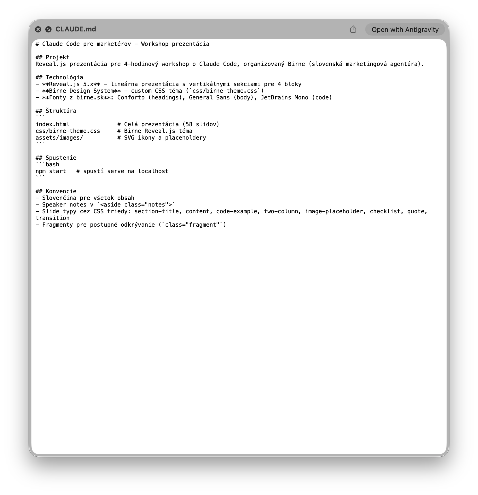
Memory - dlhodobá pamäť
Pamäť naprieč konverzáciami - CC si pamätá vaše preferencie
Automatická - CC sa učí z vašich interakcií
Editovateľná - viete ju upraviť alebo vymazať
"Pamätaj si že vždy používam slovenčinu"
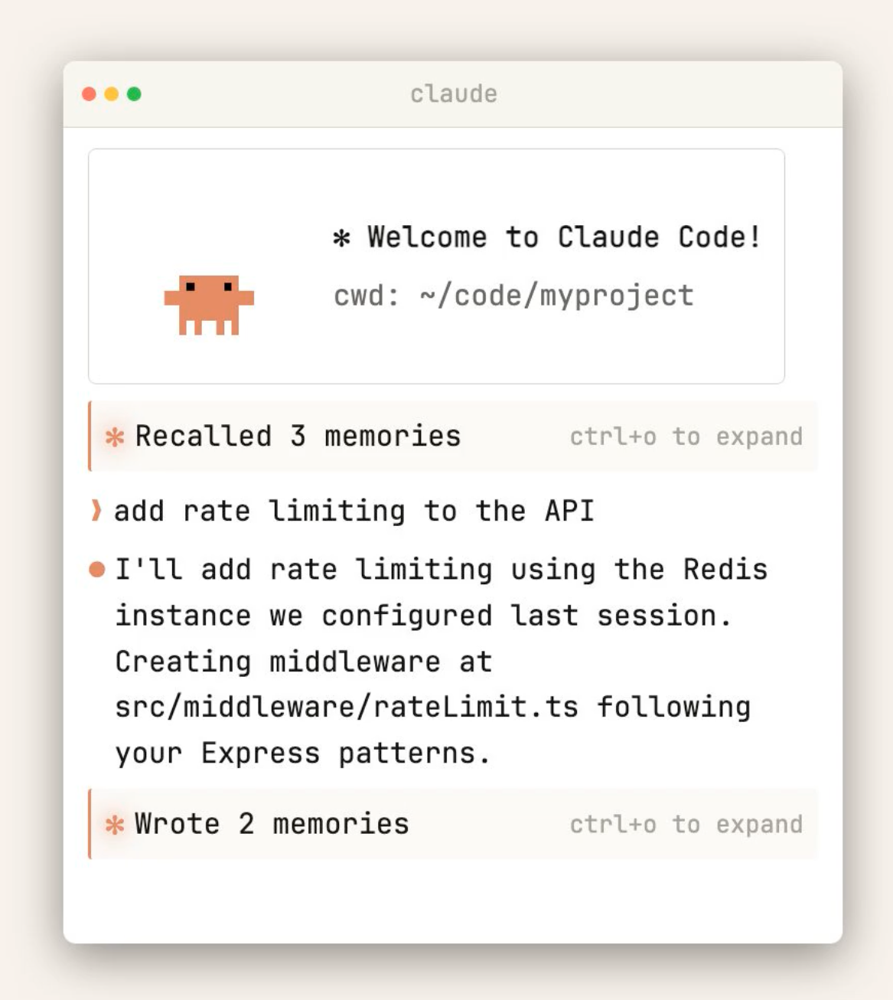
Cvičenie: Váš prvý projekt
Vytvorte priečinok pre váš projekt
Požiadajte CC: "Vytvor CLAUDE.md pre môj nový projekt"
Definujte cieľ, cieľovku, tón komunikácie
Otestujte: "Napíš email podľa CLAUDE.md"
Plan mode
Shift+Tab → prepnutie do plan mode
Pre komplexné úlohy CC najprv navrhne postup a čaká na vaše schválenie. Predídete nechceným zmenám a máte kontrolu nad procesom.
> [plan mode] Vytvor emailovú kampaň
pre Black Friday
CC navrhne plán:
1. Analyzujem CLAUDE.md pre kontext
2. Vytvorím 3 varianty subject line
3. Napíšem telo emailu
4. Pripravím A/B test verzie
5. Uložím do súborov
Súhlasíte? (y/n)
Slash commands
/help
zobraziť nápovedu
/clear
vyčistiť konverzáciu
/compact
zmenšiť kontext (uvoľniť pamäť)
/model
zmeniť AI model
Kontextové okno
Kontext = pamäť v rámci jednej konverzácie
Má obmedzenú veľkosť - ako RAM v počítači
Čím viac toho CC spracuje, tým menej miesta zostáva
/compact = zmenšiť a uvoľniť miesto
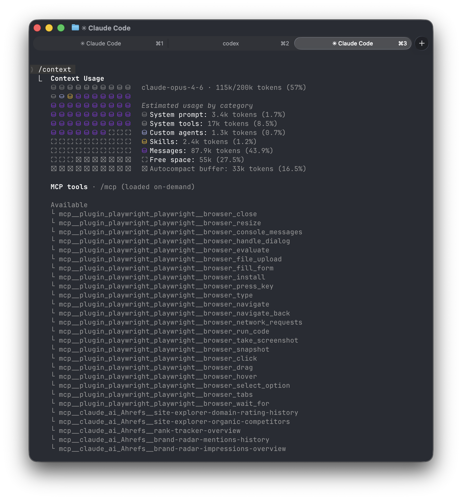
Zhrnutie: Blok 2
CC vie pracovať so súbormi - PDF, CSV, text
CLAUDE.md = projektový brief pre CC
Memory = osobné preferencie
Plan mode, slash commands, kontext
CC je ako kolega ktorý rozumie vášmu projektu.
Prestávka
10 min
03
MCP a prepojenia
60 minút
Čo je MCP
Model Context Protocol
Spôsob ako CC prepojiť s externými nástrojmi a službami.
Analógia: MCP je ako USB port pre AI.
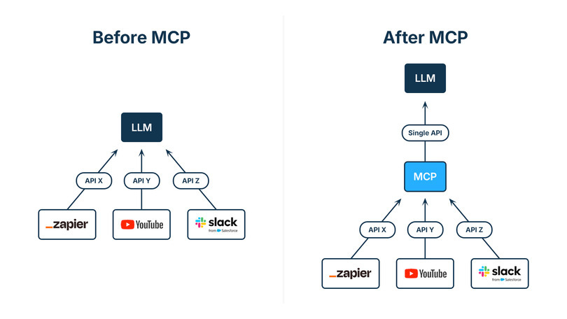
MCP ekosystém
Komunikácia
Gmail, Slack, Outlook
Dáta & Docs
Google Drive, Notion, Airtable
Marketing
HubSpot, Analytics, Search Console
Development
GitHub, Supabase, Figma
Plugins
Rozšírenia priamo v Claude Code.
Inštalácia cez /plugin
Komunita + oficiálne pluginy
Nové príkazy, agenti, skills
Jedným klikom nainštalované
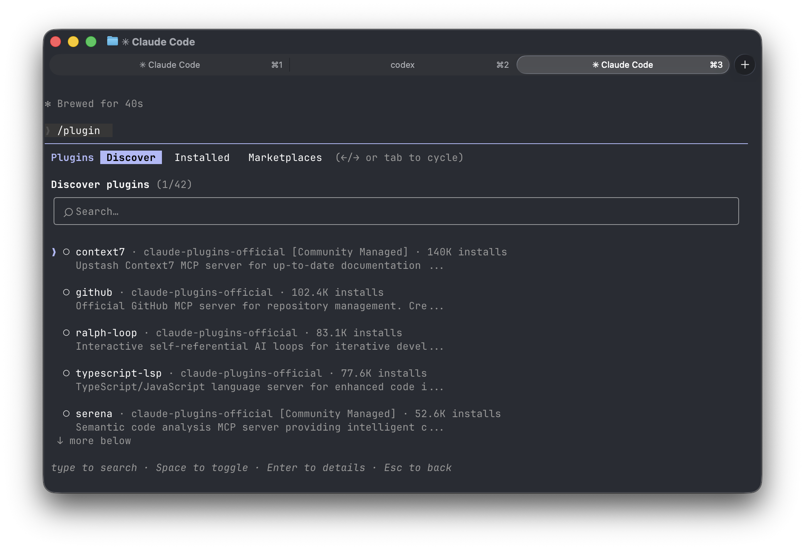
Connectors
Prepojenia v Claude.ai (webové rozhranie).
Ahrefs, Notion, Figma, Supabase...
Fungujú v prehliadači aj v CC
Oficiálne integrované Anthropicom
Bez inštalácie - stačí pripojiť
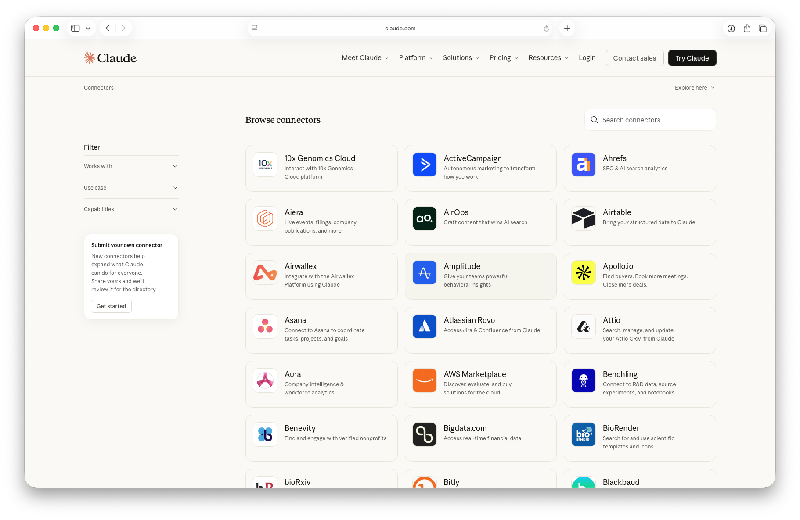
MCP vs Plugins vs Connectors
MCP
Plugins
Connectors
Kde
Claude Code
Claude Code
Claude.ai + CC
Inštalácia
claude mcp add
/plugin
Pripojiť účet
Kto robí
Komunita / vy
Komunita
Anthropic + partneri
Príklad
Supabase, Web search
Context7, GitHub
Ahrefs, Notion, Figma
Zhrnutie: Blok 3
MCP, Plugins a Connectors rozširujú CC
Každý spôsob má svoje miesto
Jeden AI agent → prístup ku všetkým nástrojom
Prestávka
10 min
04
Git, nasadenie a prostredie
60 minút
Prečo verziovať
História zmien - vrátiť sa k predchádzajúcej verzii
Spolupráca - viacerí ľudia na jednom projekte
Záloha - kód v cloude, nie len na vašom disku
Aj marketingové projekty si zaslúžia verziovanie
Git: 3 príkazy
git init
zapni verziovanie v tomto priečinku
git add .
označ všetky zmeny na uloženie
git commit -m "prvý commit"
ulož aktuálny stav s popisom
GitHub
Váš kód v cloude.
Záloha — kód v cloude, nikdy nestratíte prácu
Nasadenie — web online cez GitHub Pages / Vercel
Portfolio — projekty viditeľné pre klientov
Cvičenie: Git + GitHub
git init vo vašom projekte
git add . + git commit -m "first commit"
Vytvorte repo na GitHub.com
git push - pošlite kód do cloudu
Tip: CC vie pomôcť s git príkazmi!
Python virtuálne prostredie
Izolácia knižníc pre každý projekt.
python -m venv venv
vytvor virtuálne prostredie
source venv/bin/activate
aktivuj ho
pip install pandas matplotlib
nainštaluj knižnice
Supabase
Databáza v cloude - backend bez programovania.
PostgreSQL databáza
Autentifikácia
API automaticky
Zadarmo na začiatok
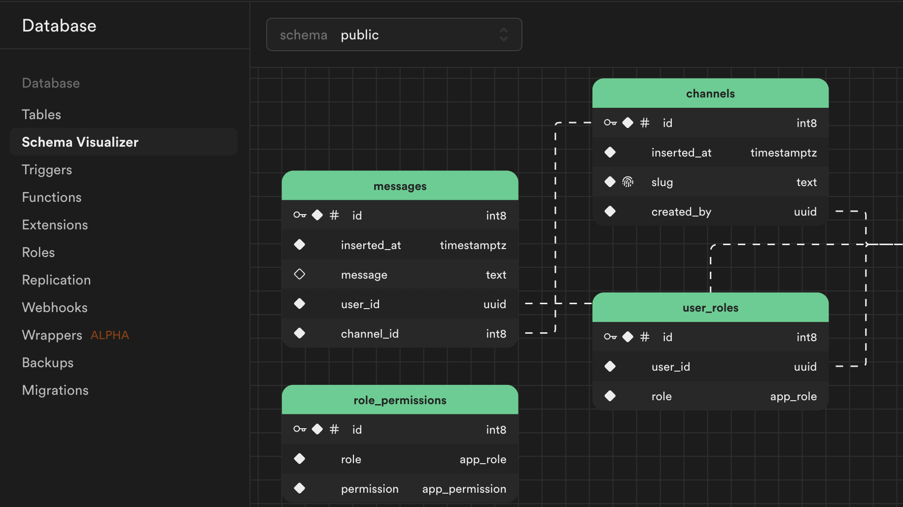
Supabase + Claude Code
# Pridanie Supabase MCP
claude mcp add supabase -- \
npx -y @anthropic-ai/mcp-supabase
# Potom v CC:
> Vytvor tabuľku pre email subscribérov
s poľami: email, meno, datum_prihlasenia
CC vytvára tabuľku v Supabase...
Tabuľka 'subscribers' vytvorená.